Kula Gezi Rehberi
Kula'nın gizemli doğası, dar tarihi sokakları ve binlerce yıllık mirası boyunca unutulmaz bir yolculuğa çıkın.
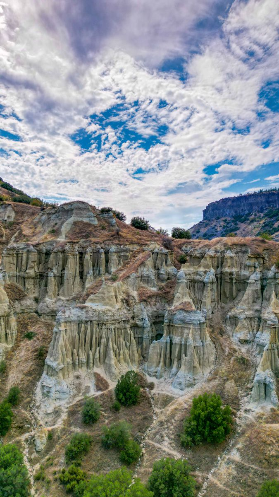
Peri Bacaları (Kuladokya)
Kula Peri Bacaları, halk arasında "Kuladokya" olarak da bilinir. Volkanik küllerin ve tüflerin su ve rüzgar erozyonu ile aşınması sonucu ortaya çıkan bu doğa harikası oluşumlar, özellikle gün batımında büründükleri kızıl tonlarla ziyaretçilerini büyüler.
Vadi içinde yapacağınız yürüyüşlerde doğanın milyonlarca yıllık sanat eserlerine yakından tanıklık edebilir, fotoğrafçılık tutkunları için benzersiz kareler yakalayabilirsiniz.
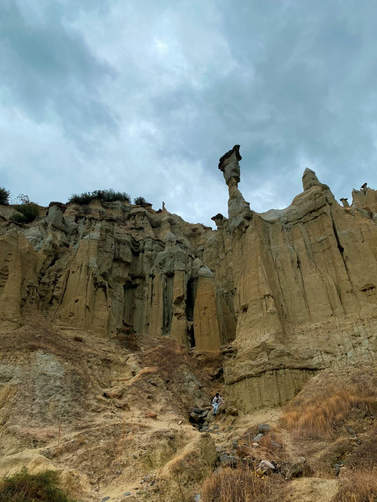
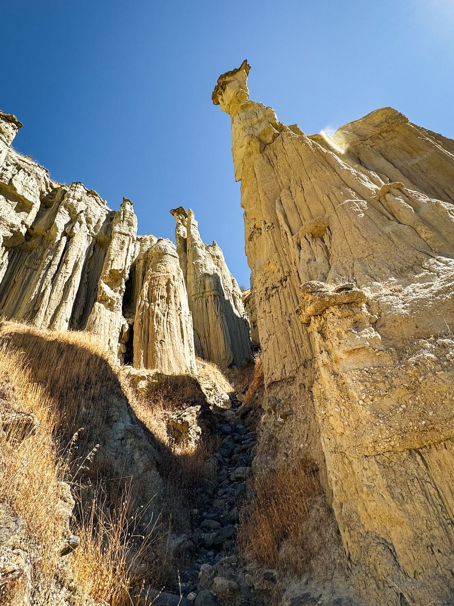
Konum
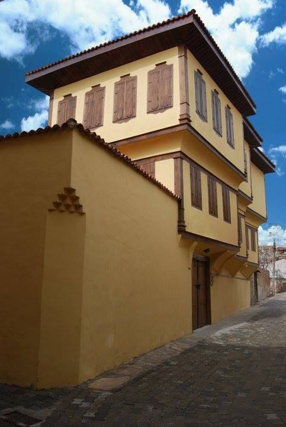
Tarihi Kula Evleri
Geleneksel Osmanlı sivil mimarisinin en güzel örneklerini sunan Tarihi Kula Evleri, dar ve taş döşeli sokaklar boyunca sıralanır. Ahşap cumbaları, kiremit çatıları ve avlulu yapılarıyla bu evler, Kula'nın zengin kültürel geçmişini günümüze taşır.
Restore edilerek butik otel veya müzeye dönüştürülen bazı Kula evlerinde konaklayabilir veya bu eşsiz atmosferin tadını çıkararak tarihi sokaklarda nostaljik bir yürüyüş yapabilirsiniz.
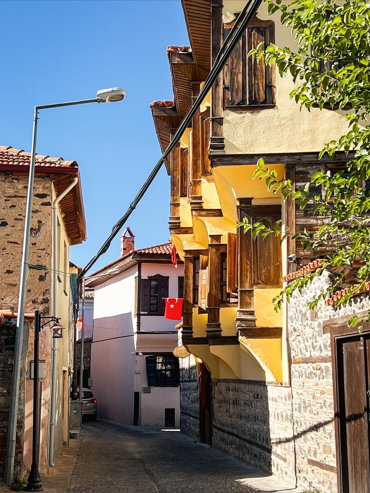
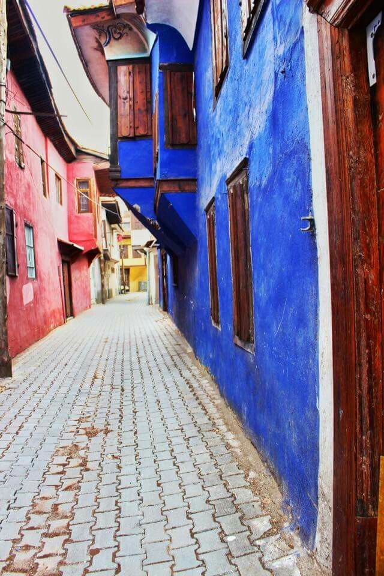
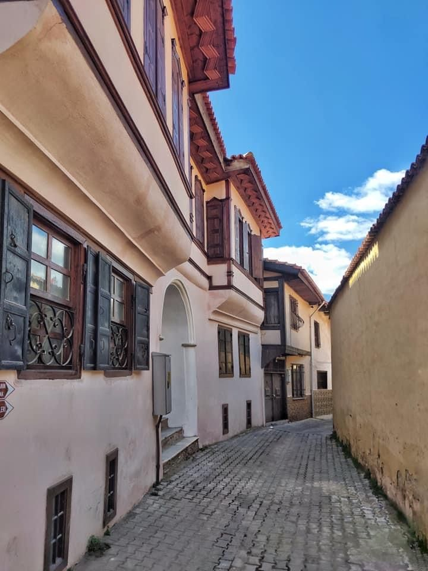
Konum
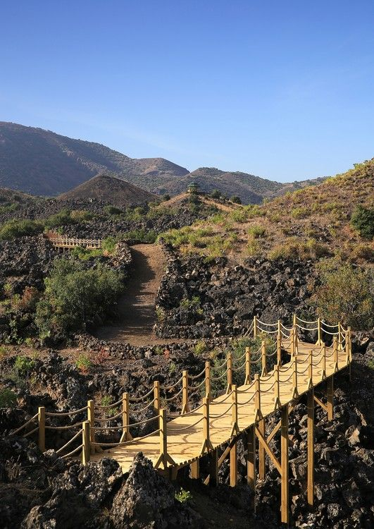
Kula Volkanik Jeoparkı
Türkiye'nin ve Avrupa'nın UNESCO tescilli ender jeoparklarından biri olan Kula Volkanik Jeoparkı, "Yanık Ülke" (Katakekaumene) olarak adlandırılır. Siyah volkanik kayalar, cüruf konileri ve lav akıntılarıyla kaplı bu geniş alan, doğanın çarpıcı gücünü gözler önüne serer.
Antik çağlardan beri ilgi odağı olan bu bölgede özel yürüyüş rotalarını takip edebilir, sönmüş volkan kraterlerinin kenarında unutulmaz bir deneyim yaşayabilirsiniz.
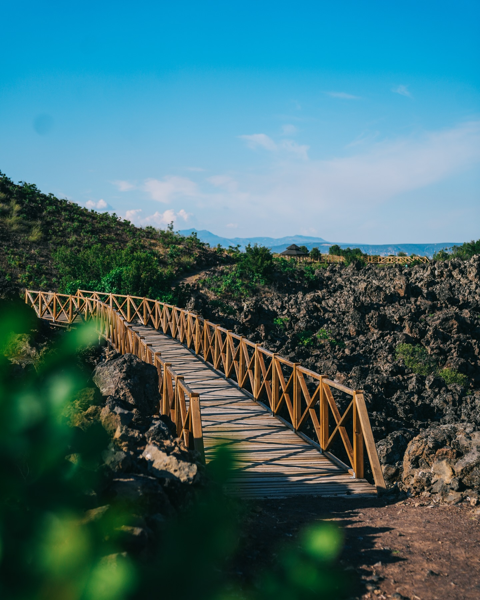
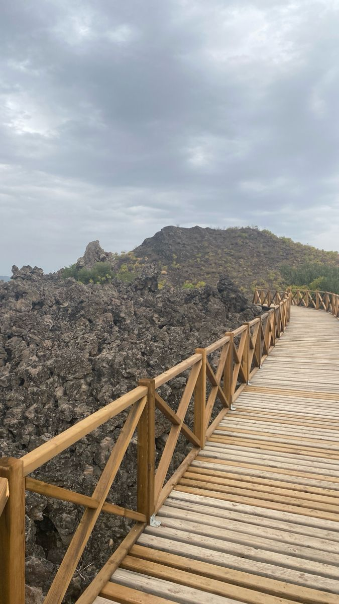
Konum
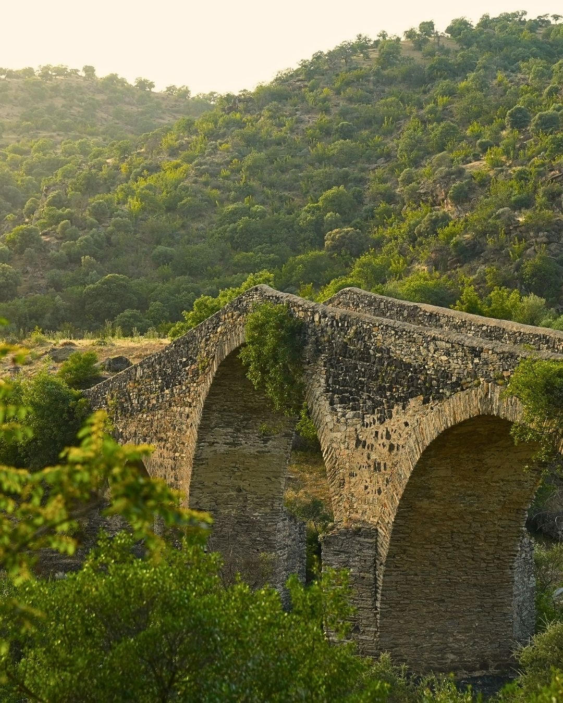
Hoca Seyfettin Köprüsü (Kız Köprüsü)
Gediz Nehri üzerinde zarif mimarisiyle yükselen Hoca Seyfettin Köprüsü (halk arasındaki adıyla Kız Köprüsü), Kula'nın tarihi ulaşım ağının en önemli miraslarından biridir. Kesme taşlardan inşa edilmiş bu zarif kemerli köprü, dönemin mimari ustalığını günümüze yansıtır.
Huzur dolu doğa manzarası eşliğinde hem tarihi hissedebileceğiniz hem de eşsiz fotoğraflar çekebileceğiniz bu köprü, Kula gezinizde mutlaka görmeniz gereken bir duraktır.
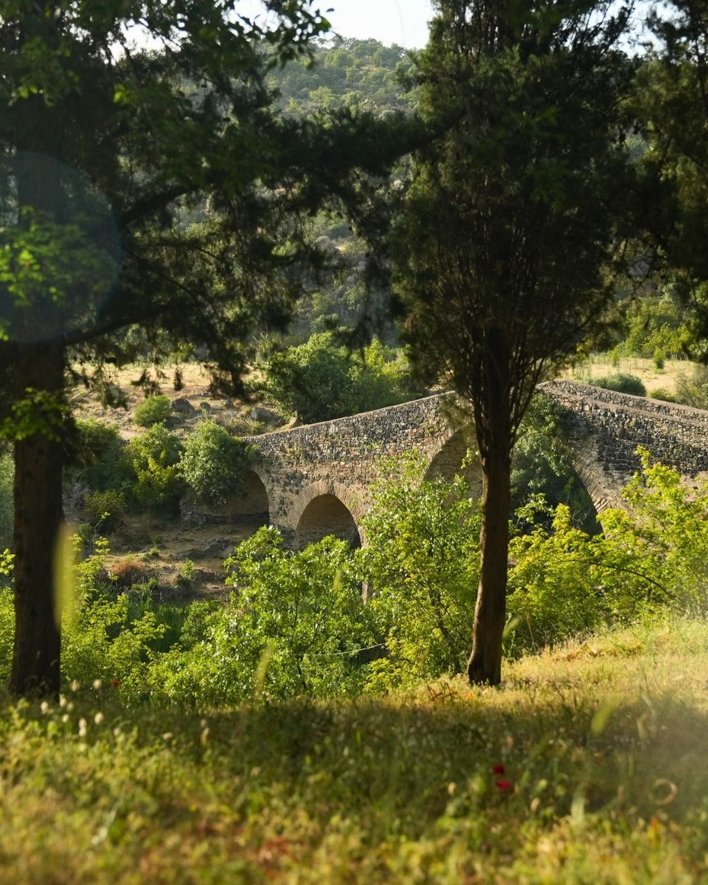
.webp)
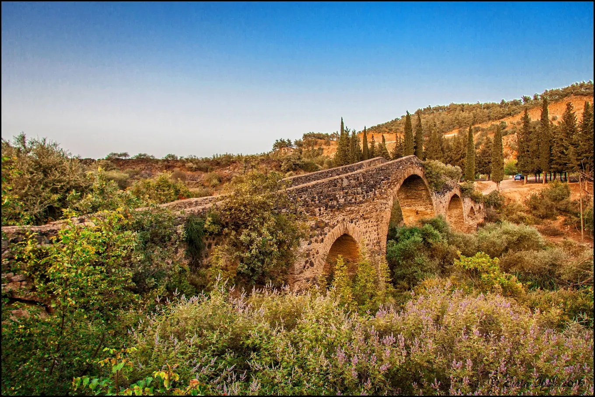